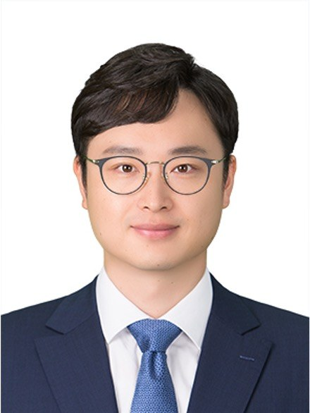
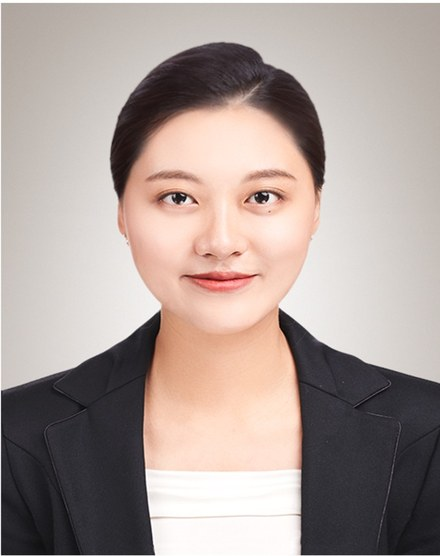

Principal investigator, members and how to join

Associate Professor, Department of Naval Architecture and Ocean Engineering, Seoul National University
Prof. Oh works on computer-aided ship design, with a mathematical foundation in computer-aided geometric design. His research spans B-spline and T-spline surface theory, hull form modeling and variation, and the integration of machine learning and LLM agents into ship design, extending toward shipyard automation and robotics. Before joining SNU, he was a faculty member at the University of Ulsan (2019–2026) and an Engineering Specialist at the American Bureau of Shipping (2013–2016).

Postdoctoral Researcher, Research Institute of Marine Systems Engineering, Seoul National University
Recruiting — see Join us.
We are looking for M.S., Ph.D. and integrated-program students, postdoctoral researchers and undergraduate interns who are interested in:
Programming experience (Python, C++, C#) is a plus, but curiosity matters more. Please email a short CV and a note about your interests to minjaeoh@snu.ac.kr.
Prof. Min-Jae Oh
Department of Naval Architecture and Ocean Engineering
Seoul National University
1 Gwanak-ro, Gwanak-gu, Seoul 08826, Korea
Email: minjaeoh@snu.ac.kr